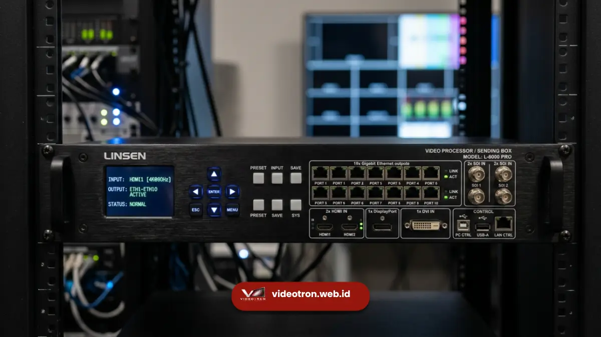

Videotron bekerja dengan menggabungkan ribuan modul panel LED yang dikendalikan oleh sistem controller untuk menampilkan gambar dan video secara sinkron.
Setiap panel terdiri dari titik-titik lampu LED (piksel) yang menyala dalam kombinasi warna merah, hijau, dan biru untuk membentuk gambar utuh yang terlihat dari jarak jauh.
- Videotron tersusun dari modul panel LED yang saling terhubung membentuk layar besar
- Sistem controller mengatur sinkronisasi tampilan gambar dan video di seluruh panel
- Pixel pitch menentukan tingkat ketajaman gambar yang dihasilkan
- Software display memungkinkan pengaturan konten secara remote
- Pemahaman cara kerja videotron membantu bisnis menentukan spesifikasi yang tepat
Bagaimana Videotron Menampilkan Gambar dan Video?
Videotron menampilkan gambar dengan cara mengaktifkan ribuan LED pada panel secara bersamaan sesuai instruksi dari sistem controller.
Setiap piksel LED memiliki tiga warna dasar yang dikombinasikan untuk membentuk warna dan pola gambar yang diinginkan, mirip dengan cara kerja layar televisi namun dalam skala jauh lebih besar.
Proses ini berjalan secara real-time, artinya perubahan konten dapat langsung terlihat begitu data dikirimkan dari perangkat kontrol ke panel videotron. Kecepatan refresh rate yang tinggi memastikan tampilan video tetap halus tanpa efek kedip yang mengganggu.
Apa Saja Komponen Utama dalam Sistem Videotron?
Komponen utama videotron terdiri dari panel LED sebagai elemen tampilan, sistem controller sebagai pengatur sinyal, power supply sebagai sumber daya listrik, serta software display sebagai antarmuka pengelolaan konten.
Panel LED berfungsi sebagai unit dasar pembentuk layar, biasanya disusun modular sehingga dapat dirangkai sesuai ukuran yang dibutuhkan.
Sistem controller berperan mengatur sinkronisasi data antar panel agar gambar tampil utuh tanpa terputus. Sementara itu, power supply memastikan seluruh sistem mendapat pasokan listrik stabil, dan software display memungkinkan operator mengatur jadwal maupun jenis konten yang ditayangkan.

Mengapa Pixel Pitch Memengaruhi Kualitas Tampilan Videotron?
Pixel pitch adalah jarak antar titik LED pada panel videotron, dan semakin kecil jaraknya, semakin tinggi resolusi gambar yang dihasilkan. Pixel pitch yang tepat perlu disesuaikan dengan jarak pandang audiens agar visual terlihat jelas tanpa pemborosan spesifikasi.
Untuk videotron yang dilihat dari jarak dekat, seperti di dalam ruangan atau lobi gedung, pixel pitch kecil lebih disarankan agar gambar tetap tajam.
Sebaliknya, untuk videotron outdoor yang dilihat dari jarak jauh seperti di jalan raya, pixel pitch yang lebih besar sudah cukup memberikan hasil optimal sekaligus lebih efisien dari sisi biaya.
Bagaimana Software Display Mengelola Konten Videotron?
Software display berfungsi sebagai pusat kendali yang memungkinkan operator mengunggah, menjadwalkan, dan mengganti konten videotron dari jarak jauh melalui komputer atau perangkat mobile. Fitur ini memberi fleksibilitas tinggi dalam mengelola kampanye promosi tanpa perlu intervensi manual di lokasi.
Selain penjadwalan konten, sebagian besar software display modern juga dilengkapi fitur pemantauan status panel secara real-time, sehingga gangguan teknis dapat terdeteksi dan ditangani lebih cepat.
Memahami cara kerja videotron membantu bisnis di Jambi menentukan spesifikasi teknis yang sesuai kebutuhan, mulai dari pixel pitch hingga sistem kontrol konten. Pengetahuan ini menjadi dasar penting sebelum memutuskan investasi videotron jangka panjang.
Jika Anda membutuhkan konsultasi teknis mengenai spesifikasi videotron yang tepat untuk lokasi Anda, tim videotron.web.id siap membantu merancang solusi videotron sesuai kebutuhan bisnis Anda di Jambi.

Hawa Nadira
LED Technology Consultant dan Visual Educator
Konsultan dan spesialis solusi display digital berdedikasi tinggi yang fokus membagikan panduan edukatif mengenai penerapan teknologi layar LED videotron untuk kebutuhan interior modern di Indonesia.